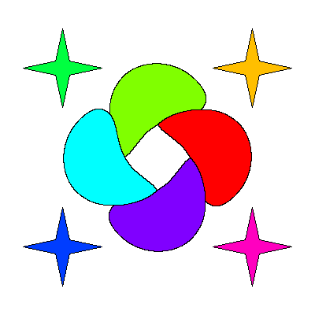

|

|
Color Harmony
Introduced 31 May 2026
General Information:
Color harmony describes a balance that Pue, the world, must maintain to remain steady and intact. It dictates the overall presence of color, as well as the ability to control it. Due to large-scale natural operations having a strong reliance on perceivable color as a multi-purpose material, it is crucial that Pue's color harmony can be maintained to a maximum.
Every general setting has a unique Chromastone that contributes to Pue's overall color harmony. Chromastones interact with each other in a far-reaching invisible network. Each chromastone is actively maintained to keep its designated position within the network strong. As chromastones thrive off local activity and accumulation of harmony through certain rituals and practices, local overseers (Blanche, etc.) are present at a respective general setting to make sure that everything is in proper order.
Associated Artifacts:

The Ultimate Rainbow Core is a large and inaccessible artifact, located in the center of Pue, that periodically collects accumulated power from the surrounding network of chromastones. It can visually measure the extent to which color harmony is present in the world. Smaller versions of this artifact exist as acquirable charms, which can reflect the actual core's measurement of the world's color harmony in a way that can be seen.
[Colormill Home]
Project Launched 11 February 2026